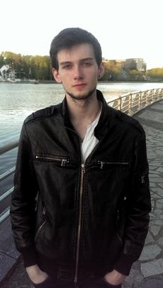

Birkos Vladislav

18.02.1997
Минск. Уручье
+375 (29) 119-07-74 Velcom
vladikbirkos@yandex.ru
github
vk link
Опыт работы
МЦТ. Старший инспектор. Поддержка, разработка ПО. 12.2017 - 12. 2018
ОДО "Компания 5". Дипломная практика. 02.2016 - 05.2016
Обо мне
Поддержка ПО Delphi + Firebird;
Разработка программного комплекса Delphi + Oracle;
Java core самообучение
Неоконченное высшее образование
2020 ИИТ БГУИР (вечернее, сокращенное)
Факультет Компьютерных Технологий, Программное обеспечение информационных технологий
2016 Минский Колледж Предпринимательства
Программное обеспечение информационных технологий
Знание языков
Русский — Родной
Английский — B1 — Средний